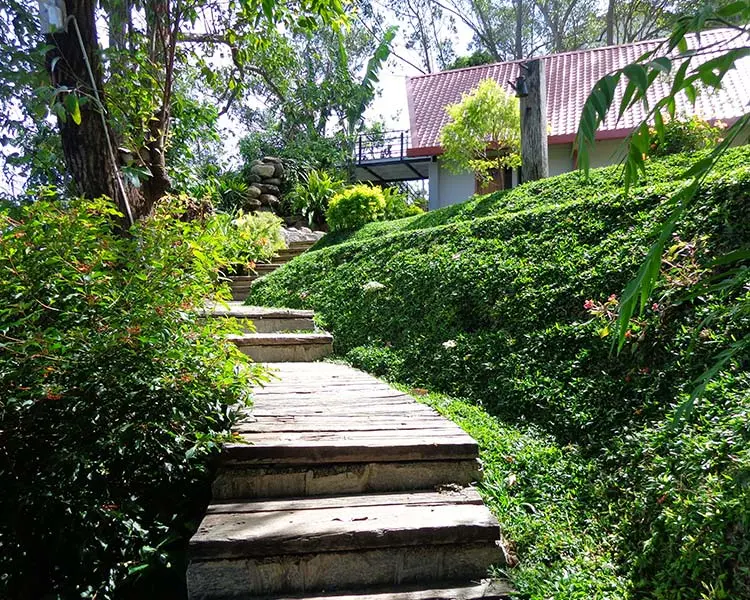
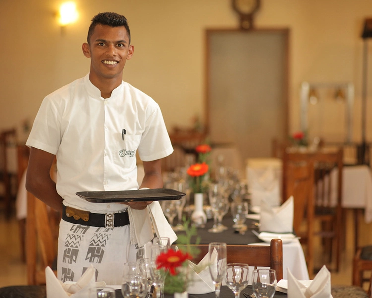
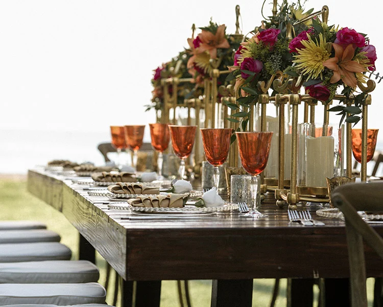

TRANQUIL GARDEN
Immerse yourself in the serene beauty of our meticulously landscaped gardens. Perfect for peaceful walks, meditation, or simply unwinding surrounded by lush tropical greenery and vibrant flowers. Our garden oasis provides a tranquil escape where you can reconnect with nature while enjoying the cool hill country climate. Take a moment to breathe in the fresh mountain air and let the natural beauty restore your spirit.




DINING AT SPICE TRAILS
Embark on a culinary journey at Spice Trails, our signature restaurant featuring authentic Sri Lankan cuisine and international delicacies. Our expert chefs use locally sourced ingredients to create exquisite dishes that tantalize your taste buds. Enjoy your meal in our elegant dining room with panoramic views of the surrounding hills, or dine al fresco on our terrace under the stars. Experience the perfect blend of flavors, ambiance, and exceptional service.
FRED'S BAR AND KARAOKE LOUNGE
Unwind and socialize at Fred's Bar, the perfect spot for evening entertainment. Our well-stocked bar offers an extensive selection of premium spirits, craft cocktails, and fine wines. Join us for our popular karaoke nights where you can showcase your vocal talents in a fun and friendly atmosphere. With comfortable seating, ambient lighting, and live sports screenings, Fred's Bar is the ideal venue to relax after a day of exploration or to celebrate special moments with friends and family.



MEETINGS, CONFERENCES AND EVENTS
As one of the largest hotels in the Ella region, Orient Hotel offers versatile indoor and outdoor areas for corporate events. Host your next team building outing, corporate event or private party surrounded by nature in the beautiful hill country town of Bandarawela. Contact our team for custom made packages combining full board premium accommodation, delicious meals, venues for meeting and add on perks such as guided treks exploring the natural wonders of the area.
WEDDINGS
Our Tranquil Garden offers a one of a kind wedding venue in Bandarawela and is the perfect location to celebrate with friends and family while surrounded by the beauty of nature. Our serene outdoor setting will be the perfect backdrop for your wedding. With the capability to provide unmatched service and delicious meals, we will ensure your special day will be unforgettable.